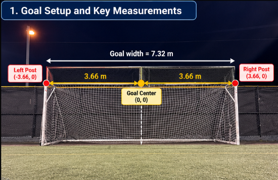

Notice + Name
This page explains what I noticed in soccer and why I thought there was geometry behind it.
What I noticed
I noticed that a shot from the center usually feels more open than a shot from a very wide side. Also, sometimes a player is closer to the goal but still does not have a very good shot. This made me think that distance alone is not enough. There must be another geometric reason.
Why I chose this topic
I like soccer and I wanted to study something from real game situations. I wanted a topic that is easy to imagine, but also deep enough to explain with mathematics.
How do shooting angle, distance, player position, and goalkeeper position affect the geometry of scoring?
Math ideas I can already see
- Triangles: the player and the two goalposts form a triangle.
- Angle: the angle at the player shows how much goal is visible.
- Distance: the player can be close or far from the goal.
- Coordinates: I can place the goal and player on a coordinate plane.
- Goalkeeper coverage: the goalkeeper blocks part of the visible angle.
- Symmetry: left side and right side positions can be compared.
Visual 1 — Real-world evidence
Replace this placeholder with your own soccer photo or screenshot from a match or training clip.

My own photo of the goal. I used this as the real-world starting point for the project because the two posts and the center of the goal give me fixed geometric reference points.
Visual 2 — Simple named geometry
Visual 3 — Goal setup and key measurements

This labeled image gives the basic measurement setup for the whole project. I use official goal width 7.32 m, so each half from the center to a post is 3.66 m. I also set the goal center as (0, 0).
Measurements I use
Why this matters
These numbers make the rest of the project easier. Once the posts and center are fixed, I can place the player at different coordinates and then calculate distance, angle, and goalkeeper coverage.
What this helps me see
The goalposts are fixed, but the player can move. When the player moves, the triangle shape changes, and so does the angle at the player. This means scoring has a geometric side, not only a skill side.